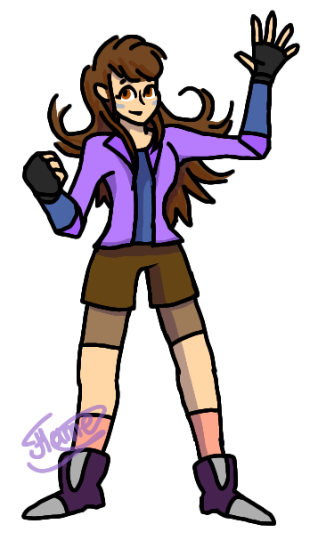

Dark
Dark (Rebirth) | |
|---|---|
|
 | |
General information | |
| Full name: | Dark |
| Age: | 2 |
| Species: | Soul golem |
| Birthday: | 31 May |
| Status: | Alive |
| Universes: | Rebirth |
Fun information | |
| Likes: |
His found family
Learning new things Physical activities |
| Dislikes: |
Daray, for messing with his friends
Losing control of himself Loud sounds |
This page is about Dark from the Rebirth universe.
Created by Daray, yet raised by Melody and friends, Dark constantly finds himself struggling with making the right choices in a world he doesn't fully understand. Yet, no matter what, he always tries his best to stay on the "good" side and protect his friends and family.
Table of Contents
Character information
Physical description
In his regular form, Dark is a humanoid soul golem of around 170 cm in height up to his head.
Dark's body is composed of an unusual shadowy arcane matter, appearing to have a texture similar to that of extremely dense smoke, albeit condensed into a more solid material. He appears to glow a cyan colour from the inside, with his digits, ribs, and eyes glowing even brighter with the same shade. Dark’s head is physically disconnected from the rest of his body, gravitating back towards it if pulled away. His “hair” is composed of the same shadowy substance, but less concentrated, making it very light and partially see-through.
Dark speaks telepathically, with his "voice" manifesting in the minds of anyone nearby. He may control who exactly receives his voice, though this requires a bit of effort.
When severely injured or otherwise drained of energy, Dark reverts into his "cloud" form - a semi-shapeless mass of smoke resembling his head. While in this state, he loses most of his abilities, including speech. His head vines become more flexible in this form, able to stretch and grab objects.
Personality
Due to his blank stare and lack of other facial features, Dark often comes across as very reserved or even somewhat apathetic… which is quite far from the truth. Dark is good-hearted and curious, always ready to aid his friends with any troubles. A bit naive, he often doesn’t fully grasp the intentions of people, be it regarding simple jokes or malicious intent.
He generally means well and tries his best to fit into society, though he still has a lot to learn.
Dark cares a lot about people he considers his family - namely, Melody, Apollo, and Frisky - and will fight for their safety if he has to.
Powers
Being a soul golem, Dark comes with several unique attributes.
Lore
Rebirth
Text
Relationships
Apollo
Text
Melody
Text
Trivia
- Example
- Of trivia list
- Adding .redlink to <a> makes it red (see above)
- See below for effect of .clear-both